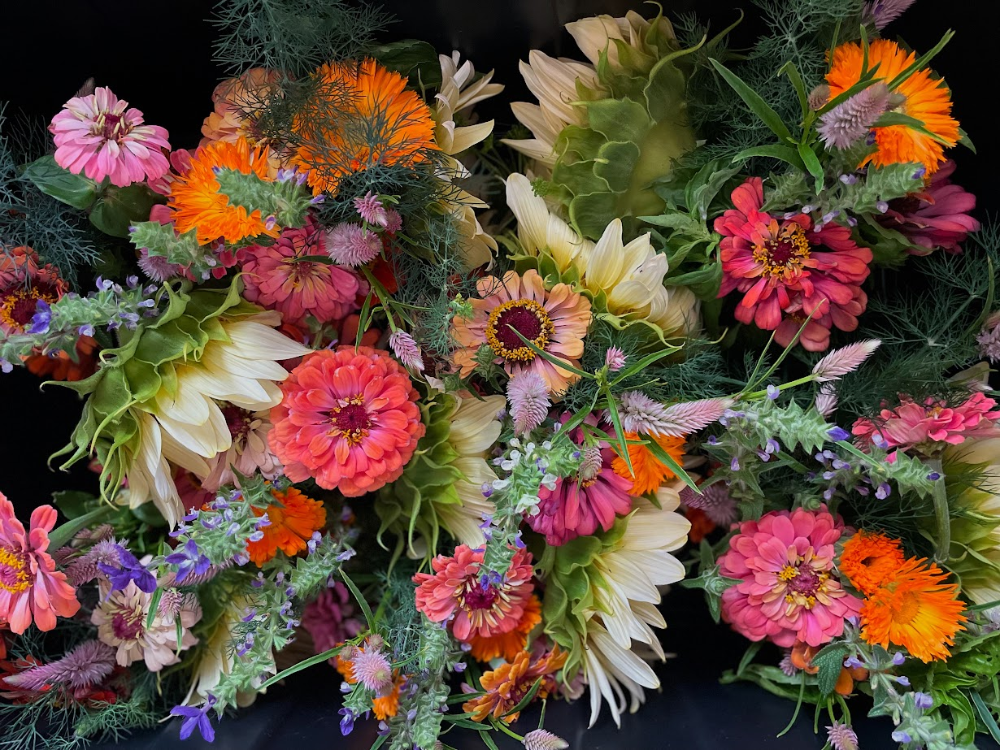

CSA Bouquet Subscription
🌸 Welcome to Ku'ono Farm’s Flower CSA 🌸 Locally Grown Blooms, Fresh From Our Fields to Your Space What is a Flower CSA? A Community Supported Agriculture (CSA) program connects local farms with community members who want fresh, seasonal produce or flowers. At Ku'ono Farm, our CSA offers beautifully arranged, farm-fresh flower bouquets grown with care right here in Makawao, HI. Brighten Your Space, Sustainably Our bouquet subscription is perfect for individuals, businesses, and retail spaces looking to bring vibrant, seasonal beauty indoors. Each arrangement features flowers grown with aloha, without the environmental toll of imported blooms. Subscription Details: Delivery or Pick-Up: Choose free delivery or pick up your bouquet in Makawao. Flexible Scheduling: Receive one bouquet every other week on the weekday of your choice. Custom Vases: Select a vase of your choice to match your space and style. Add-On Option: Want more blooms? Ask us about weekly subscription options! Summer Season Subscription (June – August): Price: $65/month Includes: One fresh, locally grown bouquet every other week (3 per month) All flowers are grown on-island at our family-run Ku'ono Farm. Your subscription supports local agriculture, reduces waste, and brings nature’s beauty right to your door.
Floral arrangements & delivery
Locally grown cut flower arrangements incorporated with herbs for cooking
Value added products
Dried flowers & teas
Farm consultation
If you are a landowner seeking to encorporate more functionality and diversify your ecosystem abundance we can help with farm planning, sourcing materials, and guidance on installation methods
Space rental
If you are looking for an outdoor space to host a small event, our space is perfect for a sunset venue (up to 30 people).